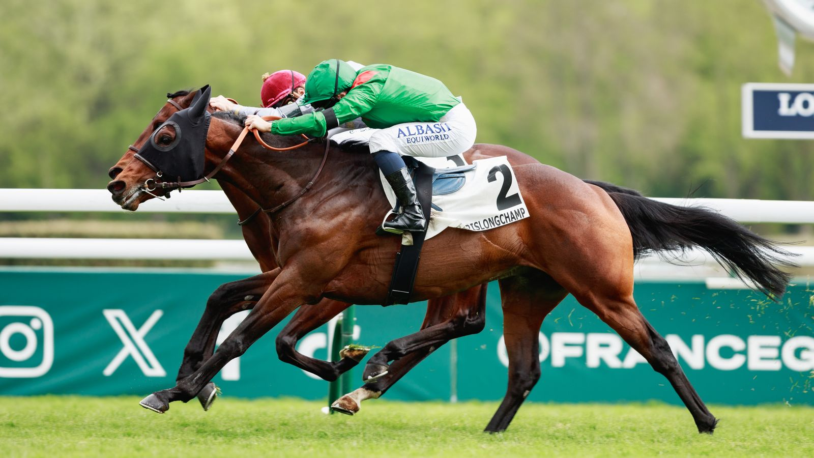

Komorebi, favorito para el Qatar Prix du Jockey Club del domingo en Chantilly

El potro de Godolphin parte como principal candidato al triunfo en el Grupo I del 31 de mayo, tras su meritoria actuación en la Poule d'Essai. Debutará en los 2.100 metros con garantías contrastadas.
Komorebi se perfila como el gran favorito para el Qatar Prix du Jockey Club (Gr. I) que se disputa este domingo 31 de mayo en el hipódromo de Chantilly. El ejemplar de Godolphin, que firmó un destacado segundo puesto en la Poule d'Essai (Gr. I), afronta su primera prueba sobre 2.100 metros con ambiciones justificadas. Louise Benard, manager de la cuadra, declaró: «Ha hecho muy bien desde el inicio de su carrera. En su última salida volvió de lejos para acabar bien, mostrando una bella punta de velocidad. No tenemos ninguna duda de su capacidad para afrontar más distancia. Tiene el número 7 en la cuerda, el mejor de los peores, y William Buick conoce al potro, lo que es una ventaja».
La oposición directa la encabeza Constitution River, que regresó con victoria neta en su debut sobre 2.100 metros, pese a partir desde el número 15 en la cuerda. Hawk Mountain, ganador solvente del Prix de Guiche, se presentará con orejeras por primera vez. Pearled Majesty, en constante progresión y convincente en el Prix Noailles, parte desde la privilegiada posición número 2. Entre los outsiders destacan Daryzan, que convenció en su debut sobre milla y se presenta en este Grupo I con intención; Hankelow, que firmó una buena reaparición en la Poule d'Essai; y Dolmalan, invicto en tres salidas y ya confirmado en Chantilly.
— Redacción de Galope al Día